Confidential | For Training Purposes Only
Lab 3 - Visibility and Troubleshooting#
Lab Overview#
Lab time: 30 minutes
On top of the stateful services and microsegmentation, the CX 10000 also delivers visibility into each and every East / West flow. During this lab, we will test some basic traffic flows (ping, SSH, iPerf3), the firewalling policies and also explore the power of having complete visibility.
Lab 3.1 - Add SVI to VLAN 10#
Description#
In order to successfully redirect packets over the switch, we need to create a correspondng Switched Virtual Interface (SVI) for VLAN 10 to the switch.
Validate#
In Fabric Composer, using the top menu, navigate to Configuration / Routing and then select VRF.
Click the 3 dots left of default and select IP Interfaces.
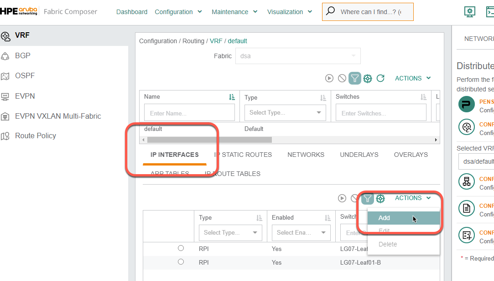
Fig. Lab 3 IP Interfaces
In the IP Interfaces context, select Actions, then Add and enter the following information in the form
Step 1 - Interfaces Type |
|
Enable this IP interface |
Yes (select) |
Type |
SVI |
VLAN |
10 |
Switches |
Select the VSX pair ( |
IP Subnet Address |
|
IPv4 Addresses |
|
Active Gateway IP Address |
|
Active Gateway MAC Address |
|
Enable VSX Shutdown on Split |
Yes |
Enable Local Proxy ARP |
Yes |
Click NEXT |
Step 2 - Name |
|
Name |
|
Description |
(optional) |
Click NEXT |
|
Review the Summary and APPLY |
Expected Results#
Verify the new SVI in the AFC
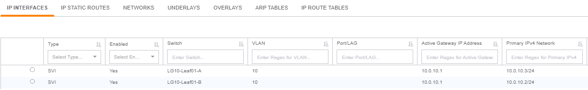
Fig. Lab 6 New SVI
Now let’s ensure that the Network was added to the PSM by logging into the PSM:
URL |
10.250.2LG.31 (LG = Labgroup Number) |
Username |
|
Password |
|
Go to Tenants / Networks and you should see VLAN10 listed in your networks
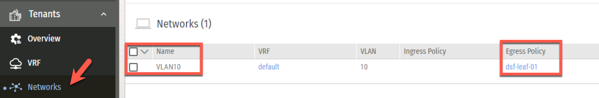
Fig. Lab 3 PSM Networks
Lab 3.2 - Test Policies and SVI#
Description#
In the previous activity, you created a policy with a single allow_all rule, to allow all traffic between Workload01 and Workload02.
Validate#
To test the rule and visualize the flows, follow the following steps:
Using Putty or TeraTerm, open an SSH session with each workload
Workload |
Address for SSH* |
Username |
Password |
Hostname |
VLAN 10 Address |
|---|---|---|---|---|---|
1 |
10.250.2LG.201 |
|
|
lgLG-wl01 |
10.0.10.101 |
2 |
10.250.2LG.202 |
|
|
lgLG-wl01 |
10.0.10.102 |
From each workload, ping the VLAN 10 SVI 10.0.10.1 to verify connectivity between the VMs and the switches.
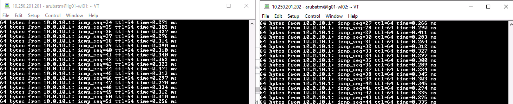
Fig. Lab 3 Ping SVI
Expected Results#
Note
If you cannot ping your gateway, check to see if the switch ports are up!
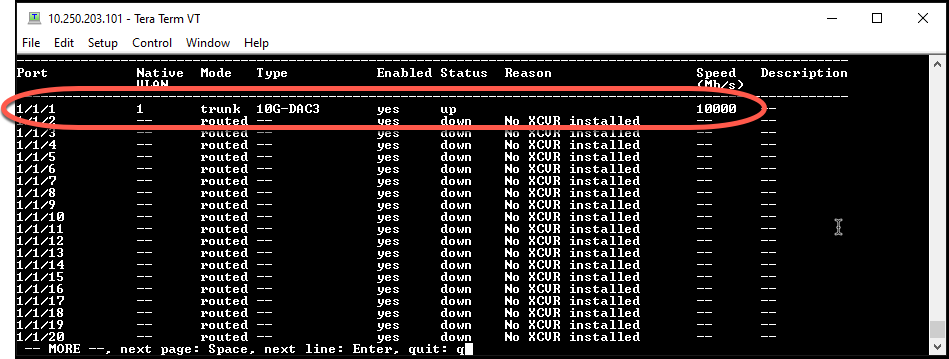
Fig. show ip interface brief
Now have a look at the following network diagram to understand the flow. Both WL01 and WL2 have 10.0.10.xxx IP Addresses and the Primary VLAN (VLAN 10) is paired with an Isolated VLAN (VLAN 11). The traffic on VLAN 11 is re-routed to the DSM chip on the CX10K for processing via the primary VLAN 10.
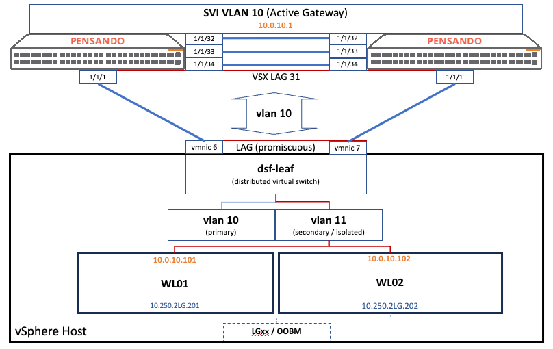
Fig. Lab 3 SVI Diagram
Policies will be defined using the AFC and sent, via automation, to the Pensando PSM. In turn, the PSM will program the enforcement on the DSM chips. A workload aware infrastructure built on top of a fully programmable, Automated, Scalable network pipeline.
Lab 3.3 - View Flow Logs#
Description#
Now that we have traffic on VLAN 10 being redirected over the DSM, we can start to look at some of the telemetry. During this lab, we will generate traffic betweeen two VMs on the same ESXi host, and will view the live flow logs.
Validate#
Using the SSH sessions to Workload01 and Workload02 from the previous exercise, initiate a new continuous ping and do not interrupt it:
From
Workload01, ping10.0.10.102From
Workload02, ping10.0.10.101
Open two new SSH sessions, to each CX 10000 Switch:
Switch |
Address for SSH |
Username |
Password |
|---|---|---|---|
1 |
10.250.2LG.101 |
|
|
2 |
10.250.2LG.102 |
|
|
On one of the switches, find which VLANs are being redirected to the DSM (Distributed Services Module = the Pensando Elba Packet Processor) for policy enforcement
Note
The CX 10000 Switch has two DSMs, and redirected VLANs are distributed between them using a hashing algorithm. In a CX 10000 VSX pair, all redirection and flow policing is synchronized across both switches
On each switch, run the following command and you should see an output similar to the screenshot below:
show dsm redirect
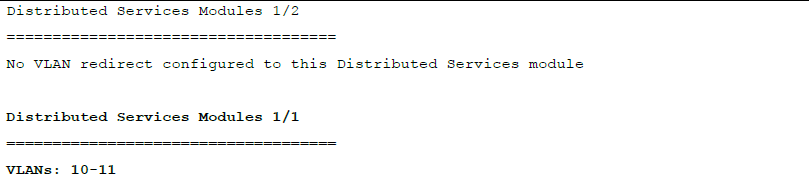
Fig. Lab 3 Show DSM Redirect
Note
In this example, VLAN 10 is redirected to DSM 1/1 on both switches, however in your lab, you may see redirection to DSM 1/2
To visualize the flows, enter diagnostics mode on the switch by entering the following commands:
diagnosticsdiag dsm console 1/1 or 1/2(ensure you specify the DSM from the command above)pdsctl show flow
Expected Results#
After running the command pdsctl show flow, you should a table showing the two flows, in each direction.
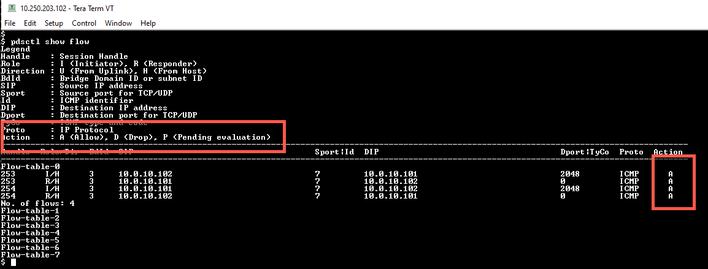
Fig. Lab 6 pdsctl show flow
Note
Notice that the action is A (allow) for all 4 flows
Lab 3.4 - Add Policy Rules#
Description#
During this exercise, we will use the AFC to modify the policy that we created in an earlier step, and add the following rules between Workload01 and Workload02:
Allow SSH
Allow iPerf3 client/server flows (default using TCP port 5201) with the server on Workload02
Deny All (block everything else, including ping)
Validate#
Using the browser, navigate back to the Fabric Composer
Go to Configuration / Policy / Rules
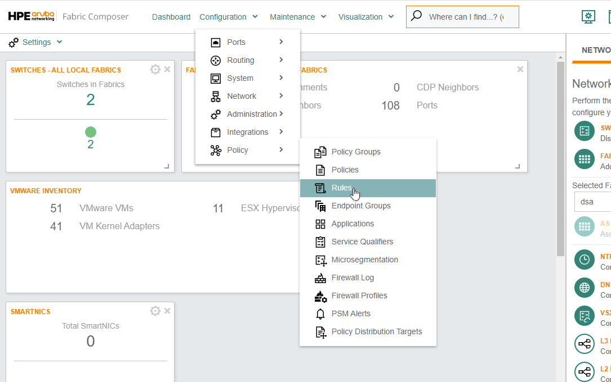
Fig. Rules Menu
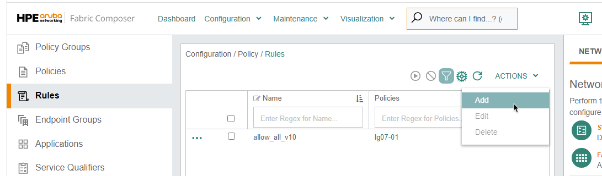
Fig. Add New Rule
Create the first
allow_sshRule using the following settings:
Step 1 - Name |
|
Name |
|
Description |
(optional) |
Click NEXT |
Step 2 - Settings |
|
Type |
Layer 3 |
Action |
Allow |
Click NEXT |
Step 3 - Endpoint Groups |
|
Source Endpoint Groups |
Select both Workload Groups |
Destination Endpoint Groups |
Select both Workload Groups |
Click NEXT |
Step 4 - Application and Service Qualifiers |
|
Applications |
SSH |
Service Qualifiers |
(leave empty) |
Click NEXT |
|
Review the Summary and Click APPLY |
Create the second
allow_iPerf_TCP_5201Rule using the following settings:
Step 1 - Name |
|
Name |
|
Description |
(optional) |
Click NEXT |
Step 2 - Settings |
|
Type |
Layer 3 |
Action |
Allow |
Click NEXT |
Step 3 - Endpoint Groups |
|
Source Endpoint Groups |
Select both Workload Groups |
Destination Endpoint Groups |
Select both Workload Groups |
Click NEXT |
Step 4 - Application and Service Qualifiers |
|
Leave the Application box emtpy and click ADD at the bottom |
Sub-step A - Name |
||
Name |
TCP_5201 |
|
Description |
(optional) |
|
Click NEXT |
Sub-step B - Settings |
||
IP Protocol |
|
|
Source Port |
any |
|
Destination Port |
|
|
Click ADD (bottom left), NEXT, review the Summary and APPLY |
Create the third
deny_allrule using the following settings:
Note
There is an implicit deny all rule at the end of any policy, so this step is optional
Step 1 - Name |
|
Name |
|
Description |
(optional) |
Click NEXT |
Step 2 - Settings |
|
Type |
Layer 3 |
Action |
Drop |
Click NEXT |
Step 3 - Endpoint Groups |
|
Source Endpoint Groups |
(leave empty) |
Destination Endpoint Groups |
(leave empty) |
Click NEXT |
Step 4 - Application and Service Qualifiers |
|
Applications |
(leave empty) |
Service Qualifiers |
(leave empty) |
Click NEXT |
|
Review the Summary and Click APPLY |
Note: Super Important!!!
Go to Policies, find the dsf-leafLG-01 policy, and click the 3 dots to add/modify the rules
Select the
allow_all_vlan_10rule and under ACTIONS, click RemoveClick the ACTIONS menu again, and now select ADD > Existing in order to add the rules from the previous step, to this policy
Select the new rules and click APPLY
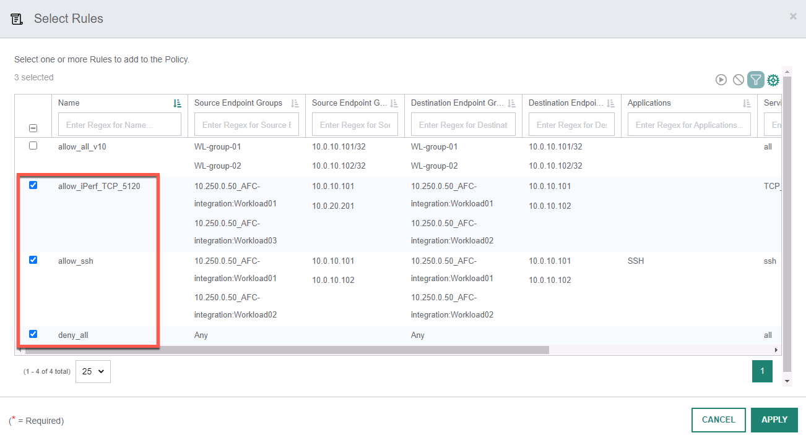
Fig. Add Rules
Note
Ensure the deny_all rule is the last rule in the policy - this will create a default deny scenario. If the deny all rule is not the last rule, you can change the order by editing the policy.
Expected Results#
Our Firewall Policy should now have a zero trust type of behavior, where all East/West traffic on VLAN 10 is dropped, with the exception of SSH between two workloads, and iPerf.
Lab 3.5 - Test Policy Rules#
Description#
In the previous activity you created new rules for traffic between Workload011 and Workload02, as well as a deny_all rule. Now we will test the behavior of these new rules. Our pings between Workload01 and Workload02 should still be running in the background as well.
Validate#
Go back to the SSH session from one of your switches and rerun the command:
pdsctl show flow
Note
In the flow table, notice that now the Action is D (deny) for all 4 flows.
Return to the SSH sessions of each workload and stop the ping. Restart the ping and according to the new ruleset, the ping should be blocked.
To test SSH on Workload01, run the following command using the credentials
arubatm/admin:
ssh 10.0.10.102
Return to the SSH session of one of your switches. Enter the DSM diagnostics mode (similar to a previous exercise) by running:
diagnosticsdiag dsm console 1/x(ensure you enter the diagnostics of the DSM which VLAN 10 is redirected to)pdsctl show flow
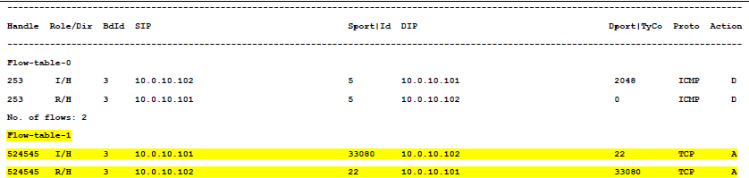
Fig. Show Flow SSH
Note
Notice that the action for the flow to and from port 22 (SSH) is A (Allow)
Expected Results#
During this lab we tested the firewall policies that we created from the previous exercise. Ping should now be blocked on VLAN 10, however SSH between our two Workload VMs should still be allowed. The graphs and flow data available in PSM allows us to view all of the allowed and denied traffic patterns.
Lab 3.6 - Testing iPerf#
Description#
Other than SSH, we also added a rule to test iPerf which is a network performance testing tool. We will configure Workload02 as the iPerf3 server, and Workload01 as the iPerf3 client.
Validate#
Go back to your SSH session on
Workload02and run the following command in order to start the iPerf3 server:iperf3 -s
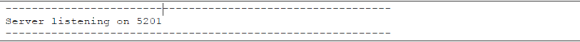
Fig. iPerf Server
Go back to the
Workload01SSH session, and log out of SSH session from Workload01 to Workload02 (if still active)On
Workload01, start the iPerf3 client using this command:iperf3 -c 10.0.10.102 -t 1000
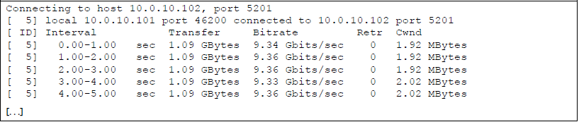
Fig. iPerf Client
Now let’s look at the flow table on one of the switches again. On one of the switches, rerun the command:
pdctl show flow
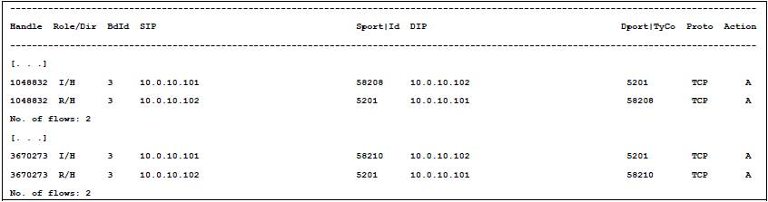
Fig. iPerf Flow Logs
Expected Results#
Just like in the previous lab, we should have the behavior that all traffic in VLAN 10 is denied, with the exception of SSH and iPerf. This lab should have confirmed this behavior.
Lab 3.7 - Unique Flows#
Description#
Enabling stateful services or microsegmentation in a brownfield environment, where little to no enforcement is d, is not an easy task. This is where some of the built in metrics to the CX 10000 help. We will look at how to find analyze unique flows on a given network.
Validate#
Open an SSH session from workload01 to workload02
ssh arubatm@10.0.10.102
Expected Results#
The SSH session should connect, if not check the rules assigned to the policy.
If necessary, using the Unique Flows function from the PSM, we are able to see all of our unique flows on VLAN, over a specified time period. Having this level of data is crucial for implementing stateful services on your network. Integration with PSM is covered in the TE4.207 course Fundamentals with AFC.
Lab 3 Summary#
We added a Switched Virtual Interface to the switch for VLAN 10
We verified that the traffic for VLAN 10 is successfully redirected over the AMD DSM, and become stateful
We analyzed the DSM flow tables to see allowed or denied traffic
We set up a zero trust and microsegmentation policy for VLAN 10, where all traffic is denied, with the exception of iPerf and SSH between two workloads
We verified that the firewall policies that we defined for VLAN 10 are enforced
SSH (tcp 22) between Workload01 and Workload02 is open
iPerf3 (tcp 5201) between Workload01 and Workload02 is open
All other traffic patterns are denied - we verified this by attempting a ping from one workload to the other